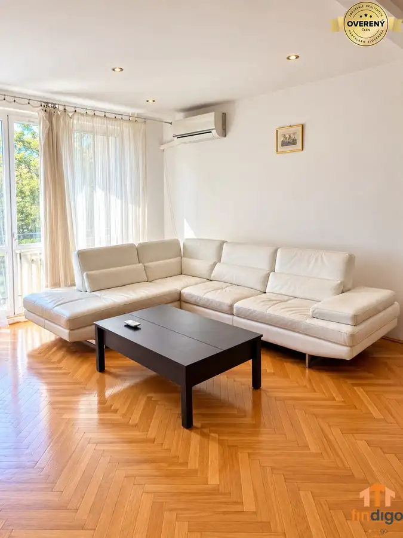

EXKLUZÍVNY PREDAJ - Stavebné pozemky v Reci pri Senci
Reca
- Plocha699 m²
- Poschodie0.
- Vlastníctvoosobné
O nehnuteľnosti
Spoločnosť Findigo Vám exkluzívne ponúka na predaj atraktívny súbor stavebných pozemkov nachádzajúcich sa v kompletne oplotenom súkromnom areáli. Projekt je ideálny pre rodiny, ktoré hľadajú pokojné bývanie v prírode, ale zároveň predstavuje výnimočnú príležitosť aj pre developerov či investorov.
Súkromie, priestor a investícia s budúcnosťou. To sú hlavné benefity jedinečného projektu stavebných pozemkov v obci Reca, len pár minút od Senca.
Na pozemkoch je pripravený návrh rozdelenia na šesť samostatných stavebných parciel, pričom každá z nich ponúka dostatok priestoru na výstavbu moderného rodinného domu s garážou, terasou, bazénom aj záhradou.
Pozemky, ktoré dávajú priestor vašim plánom
Navrhované výmery parciel:
679 m²
704 m²
749 m²
754 m²
795 m²
899 m²
Každý pozemok umožňuje zastavanosť až 30 %, čo poskytuje dostatok priestoru na komfortné bývanie aj veľkorysé exteriérové riešenia.
Projekt je možné realizovať dvoma spôsobmi – kúpiť jednotlivý pozemok pre vlastnú výstavbu alebo odkúpiť celý areál ako developerský projekt.
Výnimočné súkromie
Jedným z najväčších benefitov projektu je jeho uzavretý charakter.
Celý areál je kompletne oplotený a po jeho obvode sú vysadené približne 3-metrové vavrínovce, ktoré vytvárajú prirodzenú zelenú stenu. Budúci majitelia tak získajú pokojné bývanie s vysokou mierou súkromia, aké sa pri nových developerských projektoch hľadá čoraz ťažšie.
Inžinierske siete a pripravenosť projektu
Na pozemkoch sú vybudované:
elektrická prípojka,
vodovodná prípojka.
Súčasťou projektu je návrh novej vnútroareálovej komunikácie, ktorá zabezpečí pohodlný prístup ku každej parcele.
Po ukončení realizácie kanalizácie bude podľa schváleného návrhu vybudovaná asfaltová cesta, pričom kompletné náklady na jej výstavbu hradí súčasný vlastník pozemkov.
Investícia s potenciálom
Táto ponuka nie je len o výstavbe rodinného domu.
Vďaka pripravenej parcelácii predstavuje výbornú investičnú príležitosť pre developera alebo investora, ktorý môže realizovať komorný rezidenčný projekt pozostávajúci zo šiestich rodinných domov.
V prípade záujmu vieme zabezpečiť aj kompletnú výstavbu rodinného domu na kľúč prostredníctvom overenej stavebnej spoločnosti – od architektonického návrhu až po kolaudáciu.
Lokalita
Reca patrí medzi dlhodobo vyhľadávané obce v okrese Senec. Vďaka výbornej dostupnosti do Senca aj Bratislavy ponúka ideálne spojenie pokojného vidieckeho bývania s každodenným komfortom.
Obec disponuje kompletnou občianskou vybavenosťou vrátane materskej školy, základnej školy, potravín, reštaurácií, športovísk či vlakového spojenia. Výhodou je tiež rýchle napojenie na diaľnicu D1, vďaka čomu je dochádzanie do Bratislavy otázkou približne 25 minút.
Hlavné benefity
uzavretý súkromný areál
návrh rozdelenia na 6 stavebných parciel
výmery od
679 m²
do 899 m²
zastavanosť až 30 %
voda a elektrina priamo na pozemkoch
vzrastlé vavrínovce po celom obvode areálu
projekt novej asfaltovej komunikácie
náklady na výstavbu komunikácie znáša súčasný vlastník
možnosť kúpy jednotlivých parciel aj celého projektu
✔ možnosť výstavby domu na kľúč
Cena
120€/m² + DPH pri celom projekte
140€/m² + DPH pri viacerých parcelách
160€/m² + DPH pri jednej parcele
Provízia realitnej kancelárie: 3 % z kúpnej ceny.
Prečo spolupracovať s Findigo?
V spoločnosti Findigo zabezpečujeme kompletný servis počas celého procesu kúpy nehnuteľnosti. Postaráme sa o prípravu zmluvnej dokumentácie, právny servis, bezpečný prevod vlastníctva, komunikáciu s úradmi aj financovanie prostredníctvom našich hypotekárnych špecialistov. Naším cieľom je, aby celý obchod prebehol profesionálne, bezpečne a bez zbytočných starostí.
V prípade záujmu ma neváhajte kontaktovať:
Kristína Janovická
Parametre
| Rozloha pozemku | 699 m² |
|---|---|
| Poschodie | prízemie |
| Vlastníctvo | osobné |
| Odvoz odpadu | áno |
| Voda | verejný vodovod |
| El. napätie | 230/400V |
| Plyn | nie |
| Kanalizácia | áno |
| Internet | lokálny poskytovateľ |
| Inžinierske siete | áno |
| Káblová televízia | nie |
| Terén | rovina |
| Prístupová cesta | neupravená cesta |
| Pripravené na výstavbu | schválené v územnom pláne |
| Dátum zverejnenia | 24. 9. 2026 |
Kde to je
Mohlo by Vás zaujímať

Byt10 Cena dohodouPRENÁJOM - 2-izbový zariadený byt s balkónom - Štrkovec, Ružinov Ružinov, Bratislava 2-izbový58 m²1. podlažie Spoločnosť Findigo vám ponúka na prenájom kompletne zariadený 2-izbový byt na Svidníckej ulici v bratislavskom Ružinove, v časti Štrkovec. Balkón s…